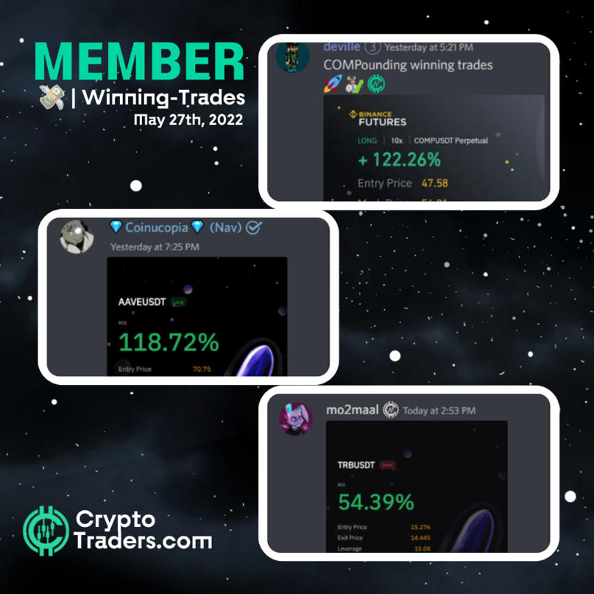
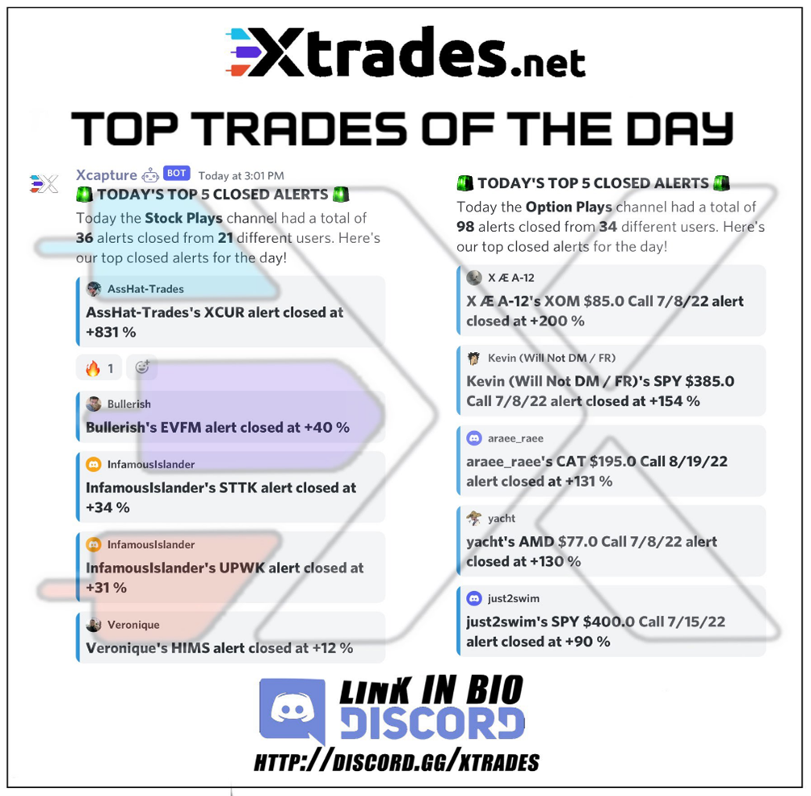

When it comes to investing and trading, there are a lot of different options out there. If you're looking for a way to take advantage of the wisdom of the crowd, then you should consider using a social trading platform. These platforms allow investors and traders to share information and insights about investments and trades and help you make more informed decisions about your portfolio. This blog post will discuss social trading applications and platforms, how they work, and why you should consider using them for your investment needs.
What Are Social Trading Applications/Platforms, And What Do They Offer Investors And Traders Alike?
Social trading platforms are online communities that allow investors and traders to share information and insights about investments and trades. These platforms can be a great way to learn about new investment opportunities, get tips from more experienced investors, and make more informed decisions about your portfolio. Many social trading platforms also offer features like news feeds, analysis tools, and educational resources that can help you become a better investor.
There are a few different types of social trading platforms out there, but the most popular ones are broker-sponsored platforms, independent platforms, and robo-advisor platforms. Some of the largest online brokers, like eToro and TD Ameritrade, offer broker-sponsored social trading platforms.

These platforms allow you to connect with other investors who use the same broker and can be a great way to get started with social trading. Independent social trading platforms, like Investopedia and TradingView, are not affiliated with any particular broker.
Robo-advisor platforms, like Wealthfront and Betterment, are also becoming increasingly popular. These platforms provide automated investing services and allow you to connect with other investors to share information and insights. These platforms tend to be more popular with experienced investors and offer a broader range of features than broker-sponsored platforms.
How Do Social Trading Platforms Work, And Who Can Use Them To Their Advantage?
Most social trading platforms work by allowing you to connect with other investors and traders who use the same platform. Once you're connected, you can share information and insights about investments and trades. You can also follow other investors and traders to see their activity and get notifications when they make a trade.
Social trading platforms can also be an excellent way for experienced investors to diversify their portfolios and get new investment ideas. These platforms can be used by anyone who wants to take advantage of the wisdom of the crowd. However, they are particularly well-suited for beginner investors who want to learn from more experienced investors.
What Are Some Of The Best Social Trading Platforms On The Market Today, And Why Should You Consider Using Them For Your Investments Or Trades?
There are several different social trading platforms on the market today, each offering unique features and benefits.
When choosing a social trading platform, you should consider your investment goals and objectives. It would help if you also looked for a platform that offers a variety of features, like news feeds, analysis tools, and educational resources.
Some of the best social trading platforms on the market today include Xtrades, eToro, TD Ameritrade's thinkorswim platform, Finviz, FlowAlgo, and others in this list below.
- eToro is one of the largest online brokers and offers a broker-sponsored social trading platform. This platform allows you to connect with other investors who use the same broker and can be a great way to get started with social trading.
- XTrades: Whether you're a beginner or a seasoned pro, our stocks sentiment data application is the perfect way to get the inside scoop on the hottest stocks in the market. With our easy-to-use interface, you can quickly find the stocks that are generating the most buzz and get up-to-the-minute news and insights. By collaborating with other users, you can learn from the best and earn while you build your portfolio.

- TD Ameritrade's thinkorswim platform is an independent social trading platform that offers a variety of features, like news feeds, analysis tools, and educational resources. It is particularly well-suited for experienced investors who want to diversify their portfolios and get new ideas for investments.
- TradingView is another popular independent social trading platform that allows you to connect with other investors and traders. This platform offers a variety of features, like news feeds, charts, and analysis tools. This platform is particularly well-suited for experienced investors who want to get new ideas for investments.
- Wealthfront is a robo-advisor platform that offers automated investing services. This platform allows you to connect with other investors to share information and insights.
- Betterment is another popular robo-advisor platform that offers automated investing services. This platform is a great way for beginner investors to start investing without having to worry about making all the decisions themselves. This platform also allows you to connect with other investors to share information and insights.
- Webull is a commission-free stock trading platform that offers a variety of features, including news feeds, analysis tools, and educational resources. This platform is particularly well-suited for beginner investors who want to learn about new investment opportunities and get tips from more experienced investors.
- Finviz is a stock screener and research platform that offers a variety of features, including news feeds, analysis tools, and educational resources. Finviz is a great way for investors to find new investment ideas and get insights into the markets.
- FlowAlgo is a social trading platform designed specifically for day traders. This platform allows you to connect with other investors and traders who use the same broker. This platform is a great way for beginner investors to start social trading. Alveo is an independent social trading platform that offers news feeds, analysis tools, educational resources, and more.
Are There Any Risks Associated With Using Social Trading Platforms, And How Can You Avoid Them?
When it comes to stocks, there is always some risk involved. After all, no one can predict the market's future with 100% accuracy. However, there are ways to minimize your risk and increase your chances of success.
One of the most important things you can do is pay attention to the trading history of a particular stock. This will give you a good idea of how it has performed in the past and whether or not it is likely to continue doing well in the future. Additionally, it is essential to be aware of a trader's style. Some people are more aggressive, which can impact their overall success rate. Finally, risk management is crucial in the world of stocks.
You need to have a solid plan for handling losses and stick to it even when things are going well. By following these tips, you can help minimize your risk and maximize your chances of success.
Before sharing information about your investment goals or strategies, you should always research a platform. For example, you may be sharing information with other investors that could be used to make decisions about your investments. Additionally, you should never invest more money than you can afford to lose.
How Do You Get Started With A Social Trading Platform, And What Should You Keep In Mind When Choosing One?
If you're interested in using a social trading platform, the first step is to choose a platform that fits your needs. It would be best to keep a few things in mind when making this decision.
- First, consider what type of investor you are. Are you a beginner who wants to learn from more experienced investors? Or are you an experienced investor who is looking for new ideas?
- Second, think about what features are important to you. Do you want a platform that offers news feeds and analysis tools? Or do you just want a simple way to connect with other investors?
- Finally, consider your budget. Some platforms charge commission fees, while others do not. Choose the option that best fits your needs and financial situation.
Once you've chosen a platform, the next step is creating an account and sharing information about your investment goals and strategies. Remember to always do your own research before making any decisions about your investments. And never invest more money than you can afford to lose.
Look for traders that have a similar style of trading. If you're just starting out, find someone with more experience and learn from them! It will also help take some pressure off because they might know what mistakes to avoid or where best to place their money so they can make gains quickly without too much risk involved in case things go wrong (which hopefully won't happen).
What Are Some Of The Benefits Of Using A Social Trading Platform, And How Can They Help You Reach Your Investment Goals?
There are many benefits to using a social trading platform. Perhaps the most obvious benefit is that it can give you access to a wealth of information and insights about the markets. Traders can learn from each other, build relationships with people in the same industry and be part of a supportive community.
- One benefit is that traders may exchange ideas by looking at all different trades and market analyses. It helps them understand how things work differently than what they've experienced before.
- Another benefit is that it can help you connect with other investors who may have different perspectives. This can help make more informed investment decisions.
- Also, social trading platforms can provide educational resources to help you learn more about the markets and investing.
- Finally, social trading platforms can help you save time by automating some research processes.